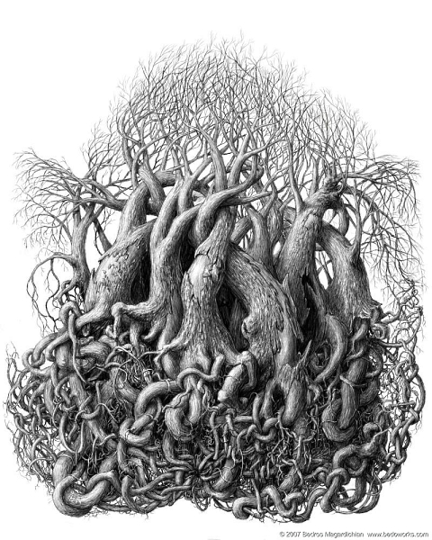
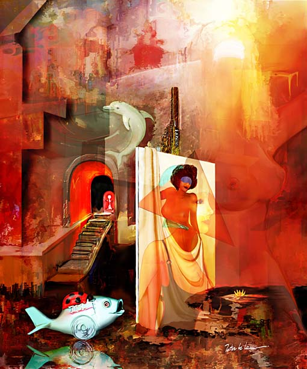
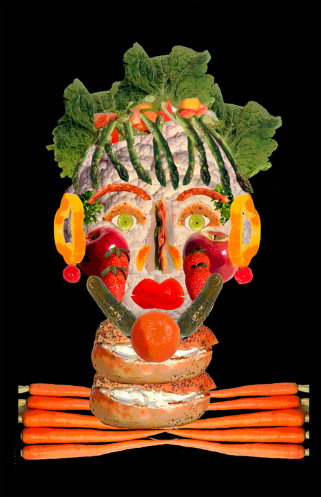

THIS PAGE HAS NOT YET BEEN FULLY PROPAGATED
Grand City
by Don Archer
05/21/2022
Click image to access all art in the Artificial Intelligence exhibit

Birth 
by Bedros Magardichian
05/24/2022
Click image to access artist's Autogallery 2010 exhibit
Alien Sculpture 00M
by Francisco Mai
05/25/2022
Click image to access artist's Autogallery 2010 exhibit

Lips 
by Peter Mc Lane
05/26/2022
Click image to access artist's Autogallery 2010 exhibit
Springlike Constellation
by Javier Mendez-Liron (Lyron)
05/27/2022
Click image to access artist's Autogallery 2010 exhibit

Edge of Perception
by Dawid Michalczyk
05/28/2022
Click image to access artist's Autogallery 2010 exhibit

Tuscan Bliss
by James Mlaker
05/28/2022
Click image to access artist's Autogallery 2010 exhibit

b>Round the Block
by Yvonne Mousr
05/30/2022
Click image to access artist's Autogallery 2010 exhibit

Food Women 
by Maurine Mulvihill
05/31/2022
Click image to access artist's Autogallery 2010 exhibit